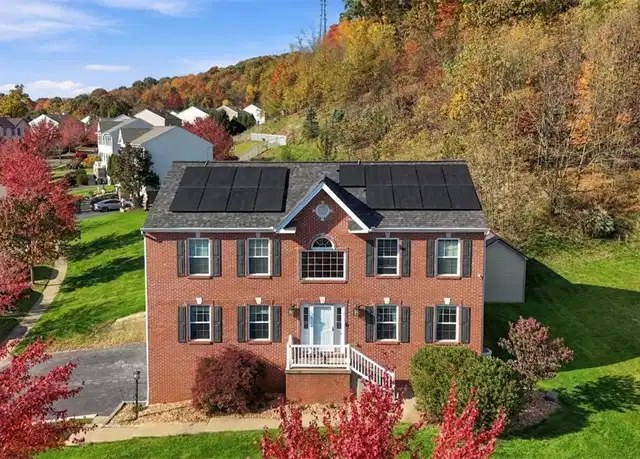

Friday, October 30, 2026
One new listing and two status changes since yesterday. Drive times are in minutes to Woodbine (Cranberry), then Foxwood (Mars), then Broadway (Wexford). They assume no traffic. Rush hour will probably add 10-25%.

01. 8001 Maureen Dr, Cranberry Twp (Marshall Woods), Butler County - $599,900 [NEW]
New listing Oct 29 (MLS #1781309). Open house Sunday, Nov 1, 11 AM-1 PM.
4 bed / 3 full + 1 half bath, 2,640 sq ft, built 2008, 0.38 ac lot
Fully finished walk-out lower level with a 27x15 rec/game room, a second kitchenette and a full bath (could work as an in-law suite). 3-car built-in garage plus extra driveway parking. Flat, usable backyard with a storage shed and a composite deck.
Described as turn-key and meticulously maintained: open kitchen/family room, stainless appliances, laminate floors on the main level, 2 gas fireplaces, large primary suite with vaulted ceiling, double walk-ins and a soaking tub. Taxes about $7,000. HOA $75 a quarter. Seneca Valley schools.
The listing photo shows solar panels on the roof. The listing doesn't mention them, so it's worth asking whether they're owned or leased.
About $50k over budget. The lot is bigger than most we've seen in Cranberry but well short of an acre.
Drive: 11 / 15 / 15. Under 15 min to all three.
707 Dunbury Ct, Seven Fields ($495,000, sent Oct 23) is now pending, and 211 Katherine Dr, Cranberry Twp ($439,900, sent Oct 23) is now contingent. Both are off the active market. 130 Woodbine Dr is still under contract. Every other home from earlier updates is still active at the same price, including all 6 homes from yesterday (527 Pine Bluff Dr, 7020 Franklin Rd, 333 Warrick Dr, 910 Poplar Pl, 914 White Water Dr and the Brookvue Elgin model).
I only searched Butler County ZIPs and skipped Allegheny County. One other new listing, 123 Burnside Dr in Jackson Twp ($525,000, built 2019), was left out because it is about 22 min to both Foxwood and Broadway. New or still-listed homes in Evans City, Forward, Connoquenessing and Middlesex were also left out because of long drives.
Prepared by your PA house search assistant
Photos are from the public Redfin listings.